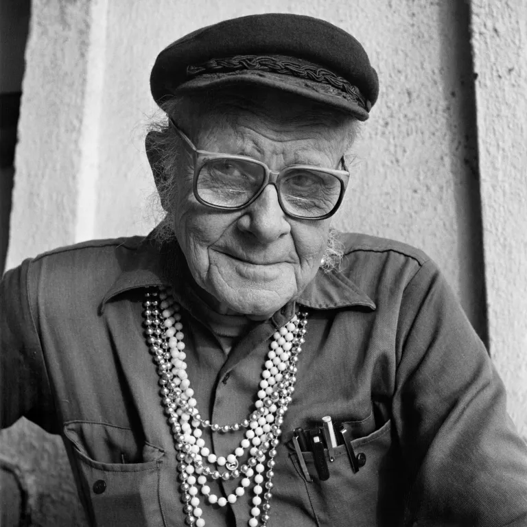
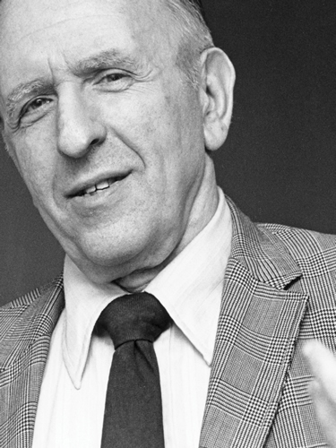
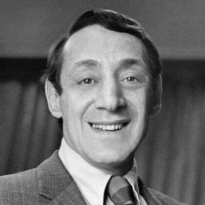
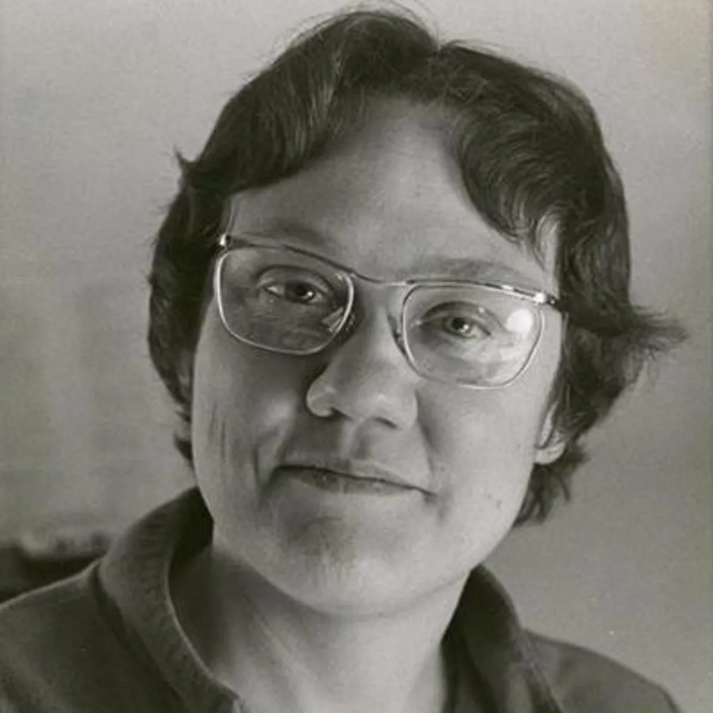
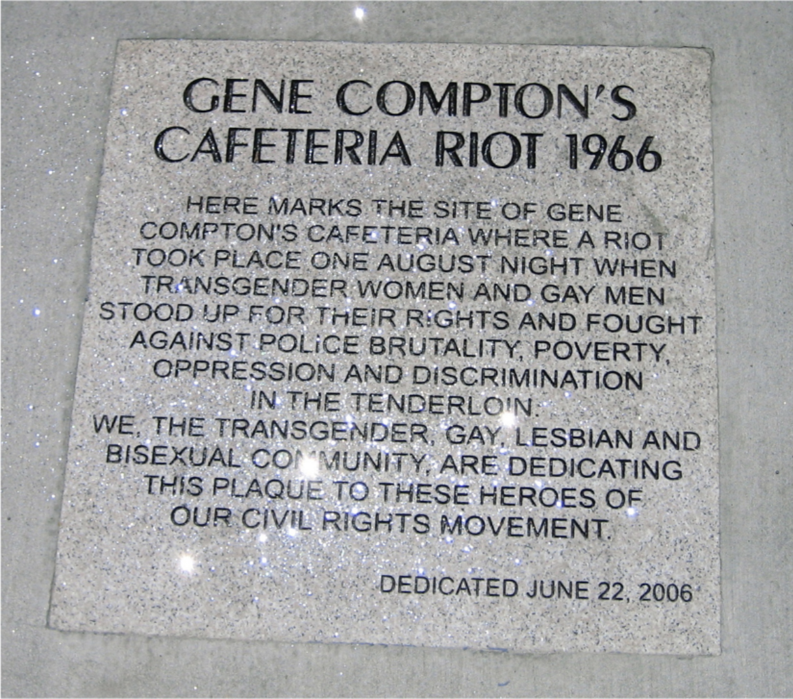
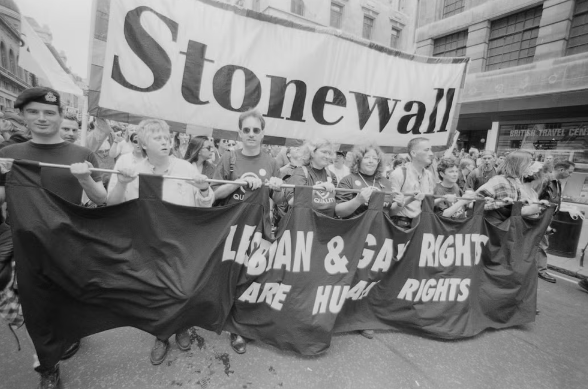
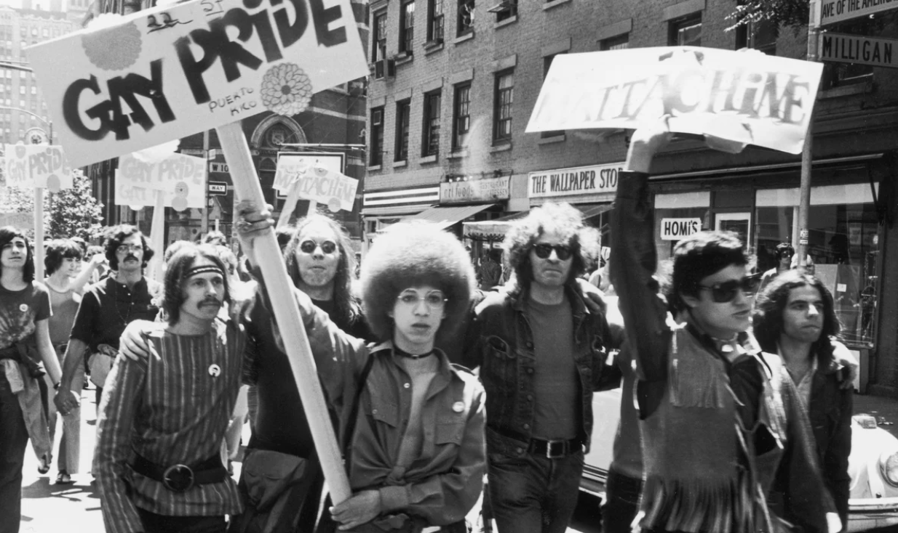

Key Figures
Leaders of the Movement

Harry Hay
Harry Hay
1912 – 2002 · Father of Gay Liberation
He's referred to as the "father of gay liberation." Hay founded the Mattachine Society in Los Angeles in 1950, which was one of the first sustained gay rights organizations in the United States. He believed that gay people were a distinct cultural minority deserving rights, not just individuals with a condition to be tolerated. Hay was later pushed out of Mattachine by more conservative members who wanted to assimilate rather than agitate, but she remained a radical voice for decades.

Frank Kameny
Frank Kameny
1925 – 2011 · Legal Architect of Gay Rights
He was a Harvard-trained astronomer who was fired from his government job in 1957 for being gay, but Kameny refused to go quiet. He petitioned the U.S Supreme Court in 1961 and was the first gay person to argue in a formal legal document that discrimination against gay Americans was unconstitutional. He organized the first gay picket lines at the White House in 1965, coined the phrase "Gay is Good" in 1968, and later played a central role in convincing the American Psychiatric Association to remove homosexuality from its list of mental disorders in 1973. More than any other single figure, Kameny built the intellectual and legal framework that every subsequent gay rights argument rested on.
Petition for a Writ of Certiorari to the United States Court of Appeals for the District of Columbia Circuit
Franklin Edward Kameny, Petitioner v. Franklin Edward Brucker, Secretary of Army, et al., Respondents. Filed by Franklin E. Kameny, June 7, 1959.
This document is one of the first legal challenges ever mounted for gay rights in the United States. At a time when almost no one openly challenged anti-gay discrimination in court, Kameny argued that gay Americans deserved full constitutional rights, that the government had no evidence homosexuals posed any threat to society, and that discrimination based on sexuality was fundamentally unjust. The petition was revolutionary. It reframed homosexuality not as a moral failing to be managed, but as a protected characteristic under the Constitution. Every legal argument the gay rights movement would make in the decades that followed can be traced back to the framework Kameny built in this document.
Click here to find the court petition from his appeal! →
Harvey Milk
Harvey Milk
1930 – 1978 · First Openly Gay Elected Official in California
He was the first openly gay man elected to public office in California. Milk won a seat at the San Francisco Board of Supervisors in 1977 after years of grassroots coalition building between the gay community, labor unions, seniors, and immigrant neighborhoods. Milk also believed that coming out to family, friends, and coworkers was one of the most powerful forms of political action, a message that helped mobilize opposition to California's Proposition 6, a measure that sought to ban gay teachers from public schools. On November 27, 1978, Milk was assassinated at City Hall by a fellow supervisor who resigned shortly before the incident. Before his death, he recorded a message declaring, "If a bullet should enter my brain, let that bullet destroy every closet door in the country."
Harvey Milk's "Hope Speech" (1978)
Delivered in 1978, Milk's Hope Speech became one of the most influential addresses in LGBTQ+ history. In it, he urged gay and lesbian Americans to come out publicly, arguing that visibility itself was a form of political power. Although delivered slightly after the earliest years of the movement, the speech crystallized the ideas that began at Stonewall and gave the Gay Liberation Movement a moral and strategic voice that could reach across the country.
Take a look at his speech →
Marsha P. Johnson
Marsha P. Johnson
1945 – 1992 · Activist & Co-founder of STAR
She was a Black transgender woman and a street queen who was living on the margins of Greenwich Village. Johnson was present and fighting during the Stonewall Uprising of 1969 and went on to cofound STAR (Street Transvestite Action Revolutionaries) with Sylvia Rivera in 1970. This was one of the first organizations in American history to provide shelter and advocacy specifically for homeless transgender youth. She later became an active ACT UP member during the AIDS crisis despite being HIV positive herself.

Barbara Gittings
Barbara Gittings
1932 – 2007 · Mother of the Gay Rights Movement
Known as the "Mother of the Gay Rights Movement," Gittings was one of America's first lesbian activists. In 1958, she founded the New York chapter of the Daughters of Bilitis, the nation's first lesbian civil rights organization. She also organized early gay rights protests, helped persuade the American Psychiatric Association to remove homosexuality from the DSM in 1973, and worked to promote equality and acceptance for LGBTQ+ people throughout her life.
A Movement in Motion
Major Events
The "Sip-In" Protest at Julius' Bar
In 1966, members of the Mattachine Society staged a protest at Julius', a bar in New York City, after bars refused to serve openly gay customers.
- It challenged discrimination against the LGBTQ+ community in public spaces and helped secure the right for gay people to gather socially in bars.
- They used peaceful civil rights-type protest tactics similar to sit-ins during the African American Civil Rights Movement.
- This event showed that LGBTQ+ activists were increasingly willing to demand equal treatment publicly and legally.
Compton's Cafeteria Riot
Compton's Cafeteria in San Francisco was a late-night restaurant where many transgender women, drag queens, and other LGBTQ+ people gathered because they were often unwelcome elsewhere. The police frequently harassed and arrested them under laws against "female impersonation" or cross-dressing.
One night, after police tried to arrest a transgender woman inside the cafeteria, she reportedly threw hot coffee in an officer's face, and a riot broke out where dishes and sugar shakers were thrown, windows were smashed, cars were damaged, and protesters fought back.
- This was one of the first times the queer community recorded a militant uprising against police harassment and brutality.

Historical plaque at the site of Gene Compton's Cafeteria, San Francisco — dedicated June 22, 2006. The plaque reads: "Here marks the site of Gene Compton's Cafeteria where a riot took place one August night when transgender women and gay men stood up for their rights and fought against police brutality, poverty, oppression and discrimination in the Tenderloin."
Oscar Wilde Memorial Bookshop
Opened by Craig Rodwell, the bookstore was the first U.S. bookstore to be exclusively devoted to gay history and civil rights in New York City. Their literature and issues were specifically dedicated to the LGBTQ+ community.
- It served more than a bookstore; it became a safe gathering place for the community, a center for activism and organizing, and a way to spread positive messages of gay and lesbian identity.
- Rodwell even intentionally avoided selling inappropriate content and instead focused on books and ideals that promoted dignity, civil rights, and community identity.
Stonewall Riots
In June 1969, a gay bar in New York City named the Stonewall Inn was raided by the police. Instead of quietly accepting harassment, members of the LGBTQ+ community fought back, leading to six days of protests and clashes with police.
- It marked the beginning of the modern gay rights movement and inspired the creation of many LGBTQ+ activist organizations.
- It also led to the first Pride marches in 1970 and encouraged more open and public activism instead of quiet advocacy.
- Stonewall is often considered the turning point of LGBTQ+ activism in the country.

Protesters march under a Stonewall banner declaring "Lesbian & Gay Rights Are Human Rights."

Early Gay Pride marchers in New York City, 1970 — the first Pride march, held one year after the Stonewall Riots.
Get Involved
Questions & Discussion
Email Us
Have a question about the project or want to learn more? Send us a message.
Ask the Chat
Have a quick question about the Gay & Lesbian Rights Movement? Ask below.